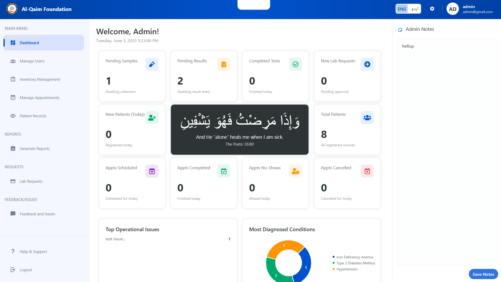
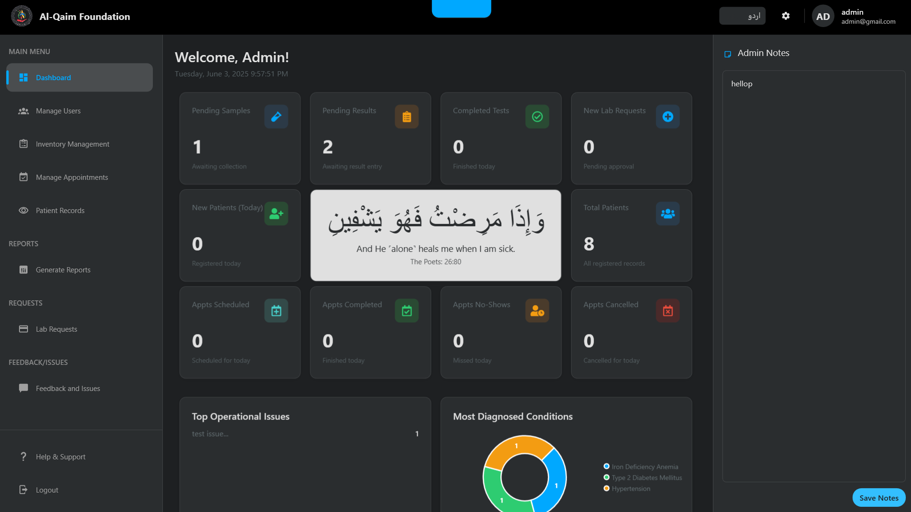
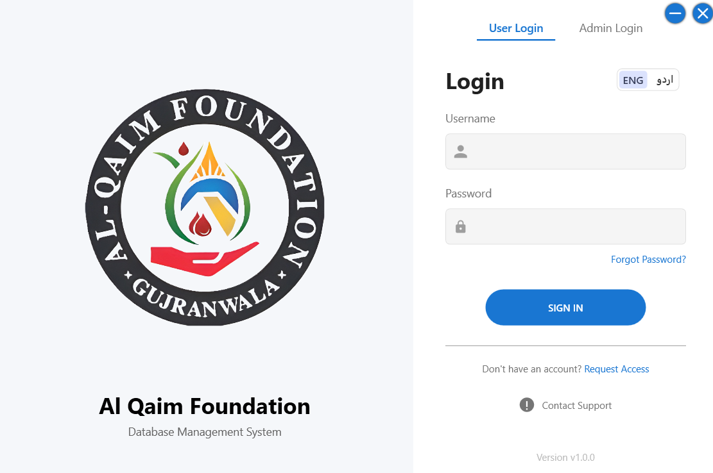
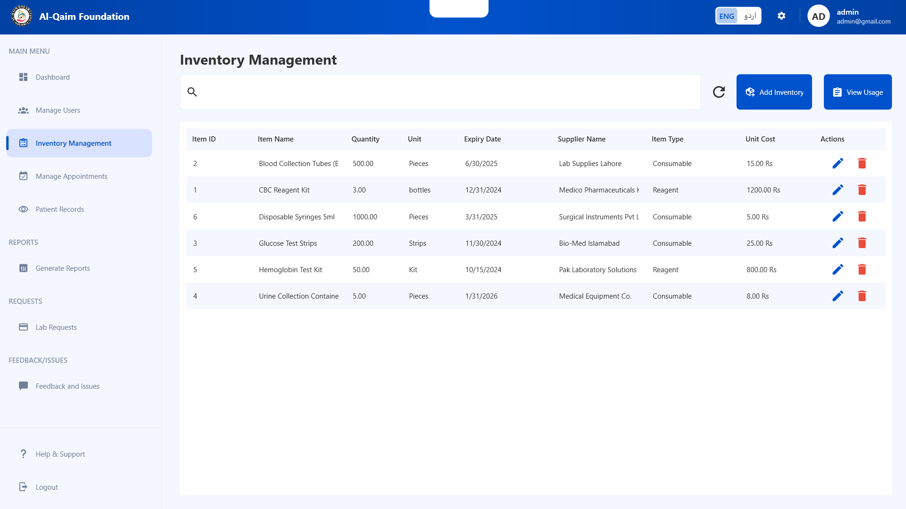
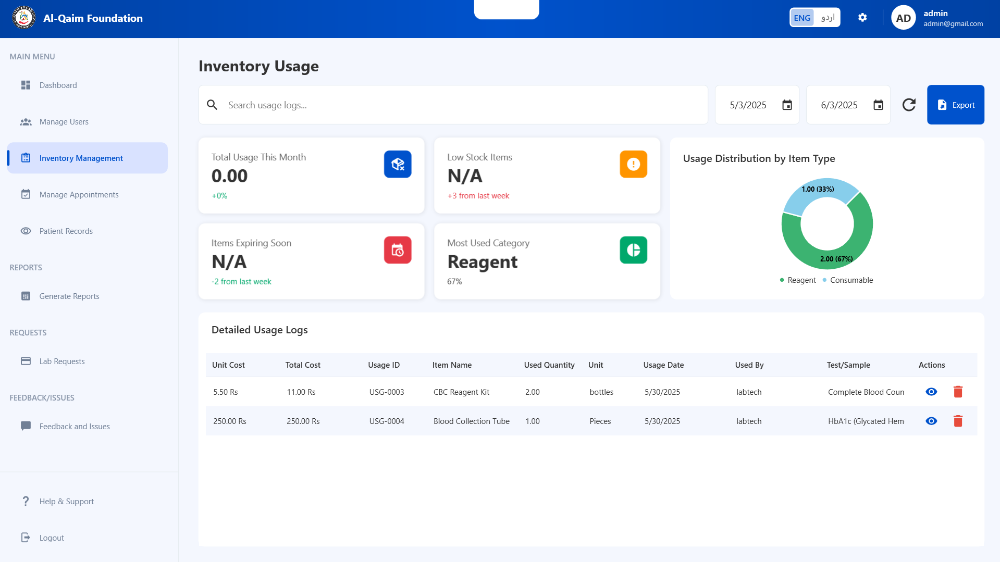
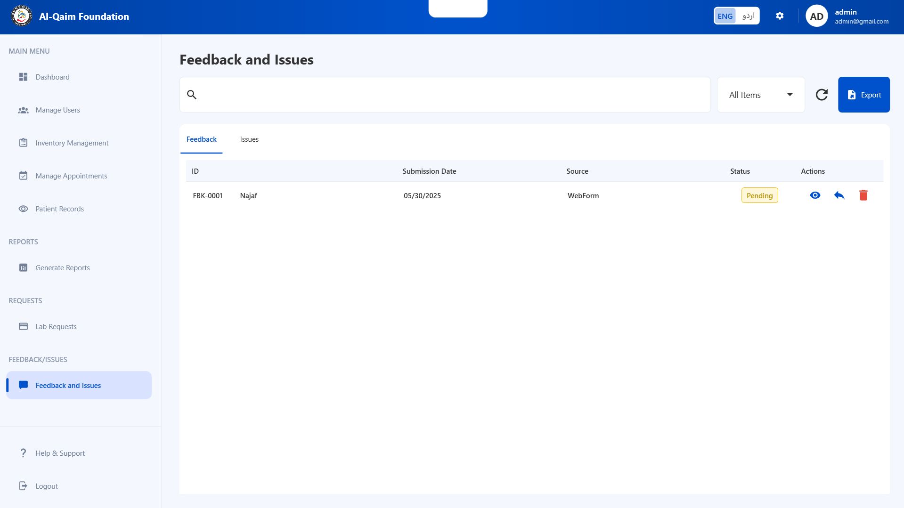
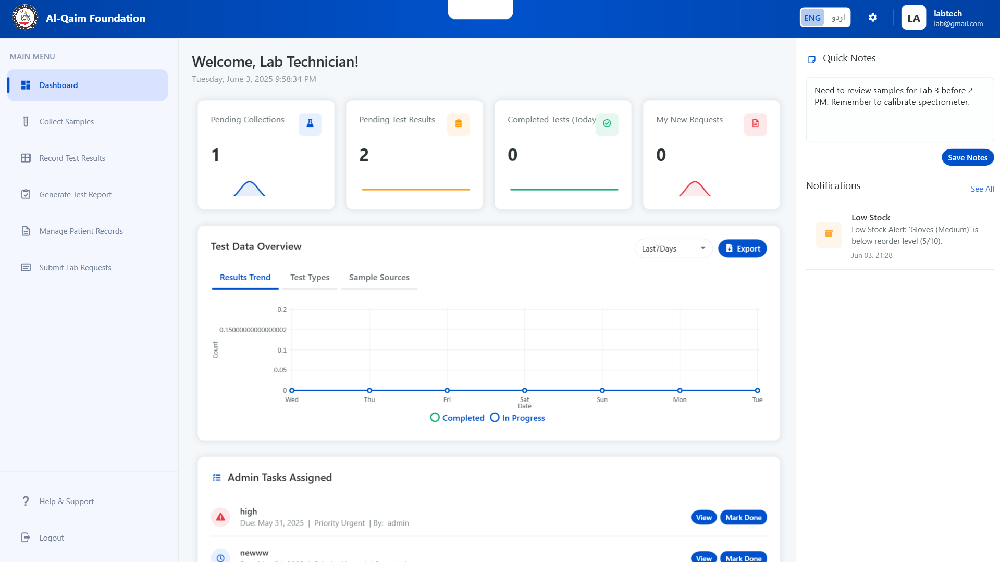
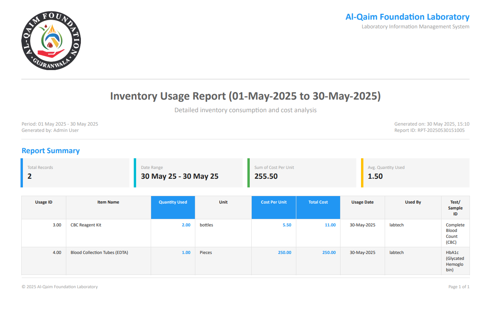

Interactive Gallery - Navigate through our LIMS features

üè† Administrator Dashboard
Real-time metrics and operational insights for comprehensive system oversight. Features live performance metrics, task management interface, real-time notifications, and operational status overview.

üåô Dark Burgundy Theme
Modern night-shift friendly interface with professional dark burgundy styling. Designed for eye-strain reduction during extended use with enhanced readability in low-light environments.

üîê Secure Authentication Portal
Role-based secure authentication with modern security protocols. Features BCrypt password encryption, role-based access control, remember me functionality, and secure session management.
üåç Urdu Language Interface
Seamless bilingual functionality with complete Urdu language support. Includes right-to-left (RTL) text support, complete interface translation, cultural date/number formatting, and dynamic language switching.

üì¶ Comprehensive Inventory Management
Advanced inventory tracking with real-time monitoring and management. Features real-time stock tracking, supplier management, expiry date monitoring, and cost analysis integration.

üìä Advanced Usage Analytics
Detailed analytics with cost tracking and comprehensive reporting. Provides usage trend analysis, cost optimization insights, resource utilization metrics, and predictive analytics.

üí¨ Integrated Feedback Management
Comprehensive feedback and issue management with Google Sheets integration. Features issue tracking and resolution, Google Sheets synchronization, feedback categorization, and status tracking workflow.

üß™ Lab Technician Portal
Streamlined workflow management for laboratory operations. Includes sample management interface, test result entry system, inventory integration, and workflow optimization tools.

üìÑ Professional PDF Report Generation
Automated template-based reporting with professional formatting. Features customizable report templates, professional formatting, organization branding, and multiple export formats.